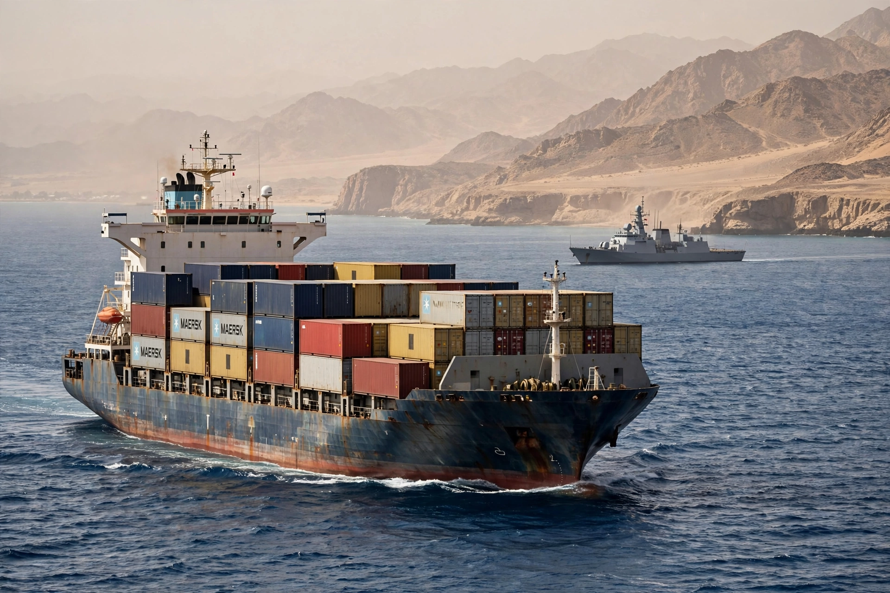

| Red Sea crisis | |
|---|---|
| Date | 19 October 2023 – present |
| Location | Red Sea, Bab el-Mandeb, Gulf of Aden |
| Parties | Houthi movement; US-led coalition; shipping companies |
The Red Sea crisis is an ongoing crisis in which the Yemeni Houthi movement has attacked commercial and naval vessels in the Red Sea and Gulf of Aden, beginning in October 2023 during the Gaza war. The Houthis stated the attacks were in solidarity with Palestinians and demanded an end to Israel's offensive in Gaza.
Using anti-ship missiles, drones and uncrewed surface vessels, the Houthis attacked dozens of merchant ships, hijacking the car carrier Galaxy Leader in November 2023 and later sinking vessels including the Rubymar and Tutor. Many shipping companies rerouted vessels around the Cape of Good Hope, sharply reducing Suez Canal transits.
The United States launched Operation Prosperity Guardian in December 2023 and, with the United Kingdom, began airstrikes on Houthi targets in Yemen in January 2024. The European Union launched Operation Aspides, a defensive naval mission, in February 2024.
The disruption raised freight rates and insurance costs and cut Egypt's Suez Canal revenue substantially, while longer voyages around Africa increased fuel use and emissions.